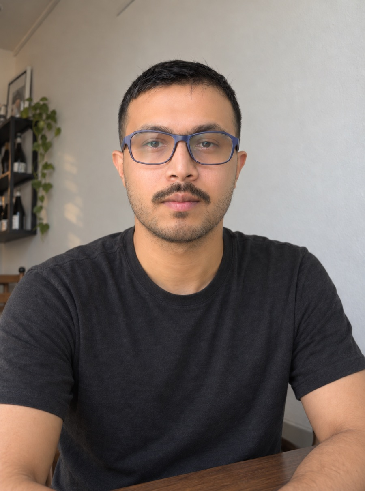
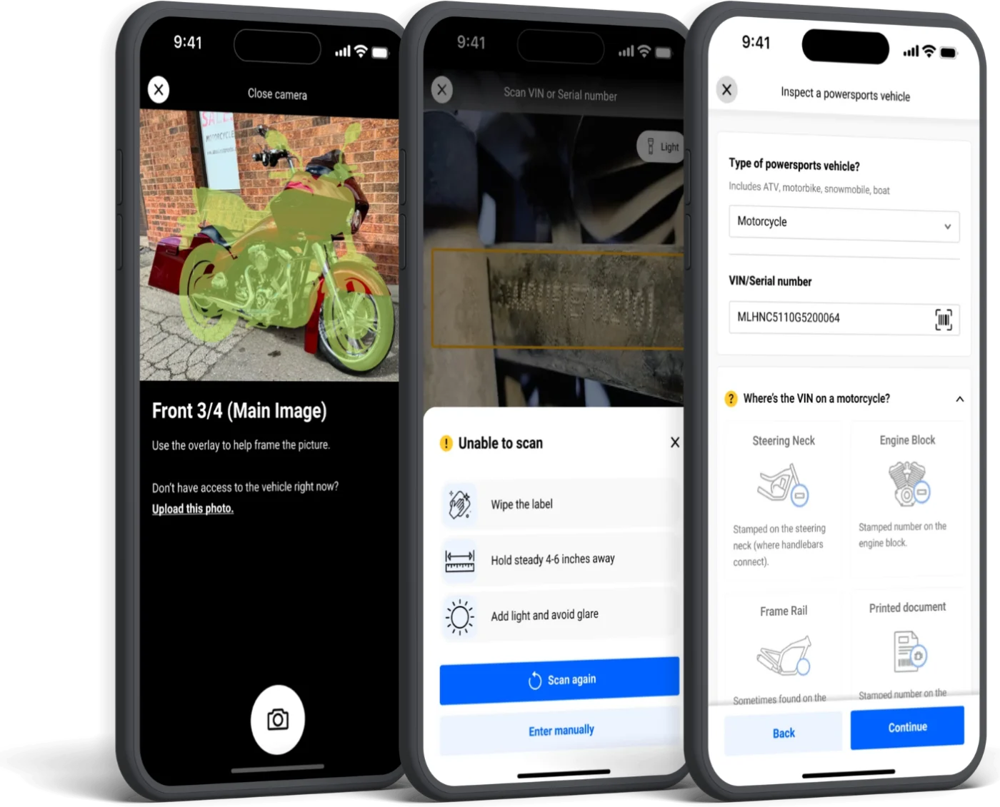
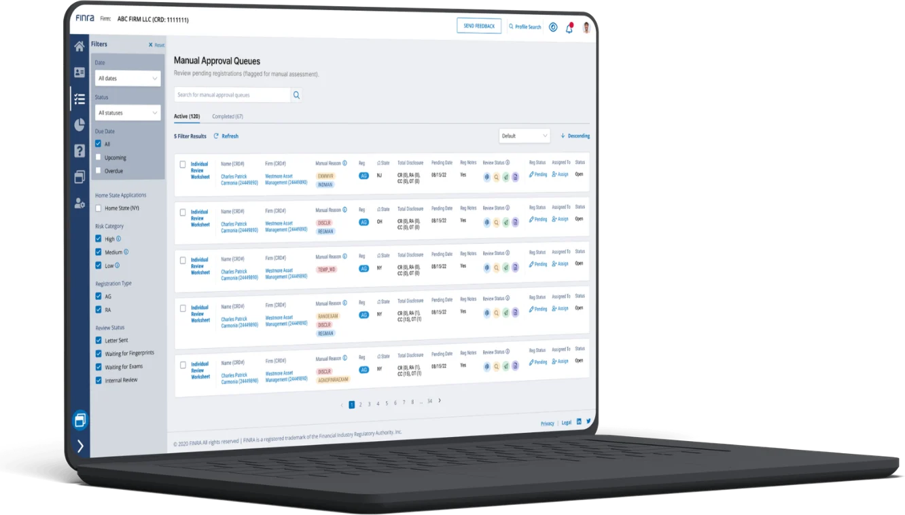

Product designer forComplex B2B workflows
I help teams shape product strategy, simplify end-to-end workflows, and build accessible, reusable design systems, bringing product, design, and engineering together early so feedback and decisions happen sooner.
Hi, I'm Sambit.

Shipped enterprise-level B2B SaaS and worked in design teams as small as 2 and as large as 10.
Fintech, SaaS and marketplace experiences, from regulated finance to field operations.
Fluent in AI-driven workflows, and in design systems that scale and meet accessibility standards (WCAG and AODA).
Cut 4 minutes from every on-site visit for 25K+ Comcast technicians, adding up to $50M+ in operational value.
I bring structure to
The messy middle.
- 01
Ask before assuming
Align product, engineering and stakeholders on who's stuck, what's in their way, and what success looks like.
- 02
Map the real work
Pair interviews and observation with behaviour data and operational context. What people do often differs from what they say, and the unofficial workarounds reveal how the work really gets done.
- 03
Prototype the hard part
Make the trade-offs explicit, then prototype the riskiest decisions, using AI when it helps us learn faster.
- 04
Measure what changed
Track task completion, errors and adoption after launch. If reality disagrees with the prototype, I adjust.
Ideal frameworks are great on paper. Here's what I do when reality shows up.
Great design should support product velocity, not block it.
Good enterprise design is invisible. You only notice it when it's missing.
A confusing step wastes minutes each time someone repeats it. An unclear warning can lead to expensive rework. Even in a sales demo, an ambiguous permission setting can make buyers question whether they'll have control after rollout. When the design works, people just get on with their jobs. I look for that quiet success in shorter task times and fewer support requests.
Selected work
Listing a motorbike is now as easy as listing a car.
Built for cars, the listing app failed on motorcycles, ATVs and snowmobiles, and 62% of dealers quit at step one. I led the 0→1 redesign so a failed scan never dead-ends a listing.

From data entry to risk judgment.
State regulators jumped across 5–7 pages to review one application. I redesigned the end-to-end workflow so evidence, actions, comments and audit history sit in one task view.

Moving FINRA's design system from XD to Figma.
A fragile Adobe XD library, a volunteer team and no budget. We rebuilt FINRA UI in Figma as a token-based atomic system and documented it on a live guidebook site.
In their words
From the designers, product managers and UX leaders I've worked alongside.
Sambit is a top-notch enterprise-level Product Designer who navigates complexity with a user-centric approach.
Read full recommendation
Sambit is a top-notch enterprise-level Product Designer who navigates complexity with a user-centric approach. He works well with developers and product partners, balancing business goals and user needs with technical constraints.
Sambit adapts exceptionally well to a range of challenges, from consumer-facing web experiences to flagship enterprise software, serving diverse business users with conflicting needs.
Sambit and I worked very closely on some difficult challenges, and he was such an amazing collaborator under pressure. I would absolutely work with Sambit again in the future.
Any team would be lucky to have an individual like Sambit not only for his abilities as a designer but for what he contributes to the growth of team culture and dynamics.
Read full recommendation
Sambit is an amazing teammate who always shows up, ready to bring his best to every opportunity and make it a success.
Sambit used his curiosity and drive to grow immensely over the years we worked together and helped his colleagues become stronger, more user-centred contributors.
Throughout his time at FINRA, Sambit contributed his expertise across dozens of products and was always up for taking on the most complex problems with a smile.
Any team would be lucky to have an individual like Sambit not only for his abilities as a designer but for what he contributes to the growth of team culture and dynamics.
Sambit is a very collaborative UX designer with the ability to move complex work through challenging environments.
Read full recommendation
Sambit is a very collaborative UX designer with the ability to move complex work through challenging environments.
During the time I worked alongside Sambit, he consistently demonstrated a consistent design approach and a continual push to improve the product.
Sambit is very thoughtful in his communication with other designers and business partners, and is able to guide conversations accordingly.
He consistently brings new ideas to the table to evolve design work and keep conversations moving in the right direction.
Remarkably flexible, Sambit consistently adapted to evolving project needs, demonstrating a rare combination of creativity and efficiency.
Read full recommendation
I highly recommend Sambit for their outstanding contributions to our team. He excelled in collaborative efforts, consistently generating innovative ideas that significantly enhanced our projects.
His ability to deliver exceptional work for stakeholders showcased a deep understanding of user experience principles. Remarkably flexible, Sambit consistently adapted to evolving project needs, demonstrating a rare combination of creativity and efficiency.
Their swift and effective work made a lasting positive impact on our team's success. He will be a great asset to any team he works with.
During our time working together, he always contributed creative ideas to solving complex user flows and consistently executed them well.
Read full recommendation
Sambit is a dedicated team member and a pleasure to work with. During our time working together, he always contributed creative ideas to solving complex user flows and consistently executed them well. I give him my full recommendation
Based in Toronto.
Now
- Looking for a team where design has a real seat at the table, shaping product decisions with product, engineering and business partners from day one.
Experience
- Storya 2025–now
- Openlane 2024–25
- FINRA 2021–23
- Ameritas 2020–21
- Comcast 2018–20
Toolkit
- Figma
- FigJam
- Miro
- Framer
- Figma AI
- Claude
- Dovetail
- UserTesting
- Mixpanel
- FullStory
- Jira
- HTML/CSS
- VS Code